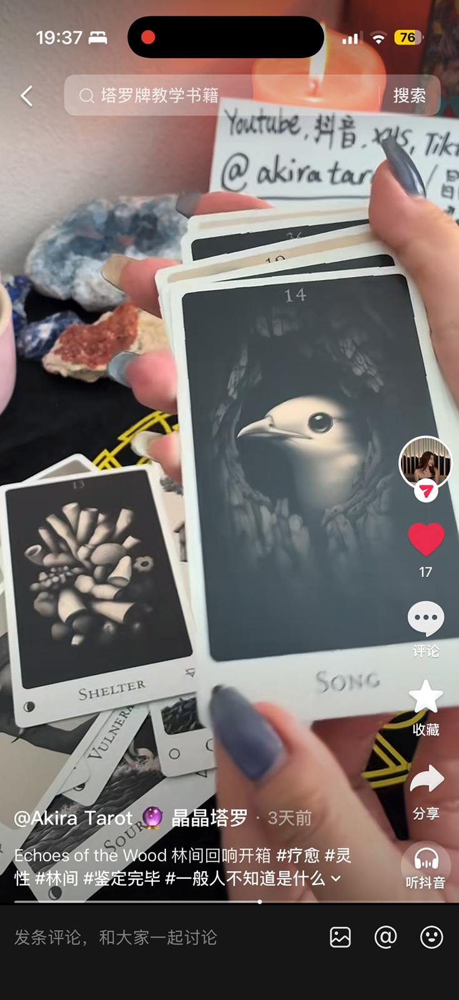

喜欢自然和森林意象的人
如果你容易被树、月亮、动物、山谷、荒野吸引，这副牌会比传统热闹画风更容易让你进入状态。
Deck review
这篇文章基于 Yoyo 的 Douyin 视频素材整理。视频中展示了 Echoes of the Wood 的牌面、开箱氛围和森林主题能量，很适合想找一副安静、疗愈、偏直觉型牌卡的人参考。

Video source
从可见牌面来看，这副牌使用大量黑白森林意象：树枝、山、鸟、狼、石头、月亮与荒野。整体不是甜美型，而是更偏安静、深层、内在探索的能量。
视频中出现的牌包括 Void、Breath、Shelter、Song、Hunger、Silence、Exile 等，名字本身就很适合做情绪觉察和疗愈式提问。
Who it is for
如果你容易被树、月亮、动物、山谷、荒野吸引，这副牌会比传统热闹画风更容易让你进入状态。
它不太像直接给“结果”的牌，更像邀请你慢下来，问自己真正害怕、渴望或回避的是什么。
如果你已经有一副标准塔罗，可以把它作为补充牌，在感情、情绪、疗愈主题里加深解读。
牌面视觉干净克制，不靠复杂颜色表达情绪，更适合安静型、直觉型读者。
How to read
“我现在需要从哪一种情绪里走出来？”
“这段关系触发了我什么旧模式？”
“我需要给自己什么样的空间和保护？”
“如果我暂停行动，内在真正想说的是什么？”
Yoyo's note
有些牌适合快速判断，有些牌适合深度陪伴。Echoes of the Wood 的氛围更接近后者：它不急着告诉你“应该怎样”，而是让你看见自己在关系、事业或生活转折里的真实状态。
如果你正在经历低谷、分离、转职、疗愈或自我重建，这类牌卡可能会比强预测型牌卡更适合你。
Find your deck
你可以先进入商店选择牌卡，也可以预约咨询，说明你想用牌卡做占卜、疗愈、学习还是日常觉察。